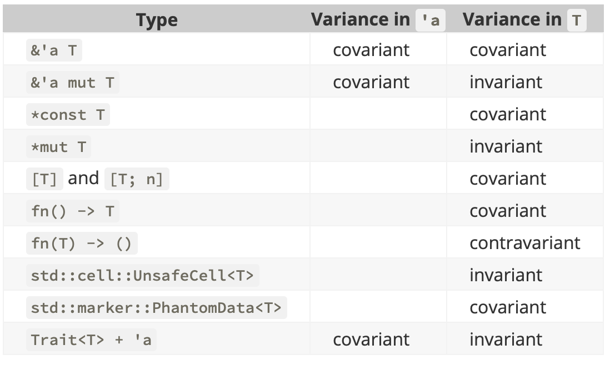

Programmation par Traits
sous l'influence de la gestion mémoire

- “zero cost abstractions”
- Pas de ramasse miette
- Richesse du typage
- Fonction d'ordre supérieur
- Pattern Matching
- Polymorphisme paramétrique
- Concept de trait
- Polymorphisme ad-hoc
- "Typeclasses" à la Haskell
Principes abordés
Type énuméré & Structure
Spécification de trait
Implementation de trait
Ownership, Borrowing et Lifetime
Petits rappels
Enumeration
enum Option<A> {
Some(A),
None
}
Non extensible
Pattern Matching
let o = Some(1)
match o {
Some(a) => print!("A pour valeur {}", a),
None => print!("Aucune valeur associée")
}
Exhaustif
Structure
struct MyStruct(String);
let MyStruct(s) = my_struct; // Pattern matching "simple"
struct MyStruct {
source: String
}
let MyStruct { source } = my_struct; // Pattern matching
let source = my_struct.source // Accès direct par nom
Définition Trait
trait MyTrait {
fn new(source: String) -> Self;
fn description(&self) -> String;
}
Implémentation de Trait 1/2
impl MyTrait for MyStruct {
fn new(source: String) -> Self { // Self ≡ MyStruct
MyStruct { source }
}
fn description(&self) -> String {
String::from("MyStruct(...)")
}
}
Implémentation de Trait 2/2
impl MyTrait for String {
fn new(source: String) -> Self { // Self ≡ String
source // Identity
}
fn description(&self) -> String {
self.clone() // Borrowing ⇒ Ownership
}
}
Utilisation 1/3
fn main() {
let data : MyStruct = MyTrait::new(String::from("test"));
let description = data.description(); // "MyStruct(...)"
...
}
fn main() {
let data : String = MyTrait::new(String::from("test"));
let description = data.description(); // "test"
...
}
Utilisation 2/3
fn main() {
let data = <MyStruct>::new(String::from("test"));
let description = data.description(); // "MyStruct(...)"
...
}
Utilisation 3/3
fn main() {
let data = MyStruct { source: String::from("test") };
let description = data.description(); // "MyStruct(...)"
...
}
fn main() {
let data = String::from("test");
let description = data.description(); // "test"
...
}
Passage à la pratique
Parser<A> ≝ String → (Success<A>|Reject)
Satisfy(predicate: char -> bool) -> Parser<char>
And(left:Parser<A>, right:Parse<B>) -> Parser<(A,B)>
Repeat(optional:bool, parser:Parser<A>) -> Parser<Vec<A>>
Exemple simpl(ist)e
Satisfy(predicate: char -> bool) -> Parser<char>
And(first:Parser<A>, second:Parse<B>) -> Parser<(A,B)>
Repeat(optional:bool, parser:Parser<A>) -> Parser<Vec<A>>
Stage #1
L'approche naïve
Ownership
- A une valeur correspond une variable: le owner.
- Il n'y a qu'un seul owner à la fois.
- Quand le owner est hors de portée (bloc de base)
la valeur est abandonnée
Problèmes ouverts
- Clonage de chaîne
- ↳ Ownership à l'exécution i.e. parse
- ↳ Forte consommation mémoire
- Utilisation de Box
Stage #2
Zéro copie !
Elimination du clonage de chaîne
Ownership ⇒ Borrowing
Problèmes ouverts
- Utilisation de Box
- Impossible de capturer une sous-chaîne
Stage #3
Elimination des Box
Polymorphisme Paramétrique
Problème ouvert
- Impossible de capturer une sous-chaîne
- ↳ Pas de Lifetime à l'analyse i.e. parse
Stage #4
Permettre la capture
de sous-chaîne
Borrowing avec Lifetime explicite
Problème ouvert
- Couplage fort structure et comportement
- ↳ Lifetime à tous les niveaux !
Stage #5
Découplage
Multiplication des Traits
Stage #6
Capture de sous-chaîne efficace
Polymorphisme ad-hoc
Benchmarks simple
| #1 | 3 M/s |
|
Box Ownership |
| #2 | 51 M/s |
|
Box Borrowing |
| #3 | 77 M/s |
|
|
| #4 | 77 M/s |
|
|
| #5 | 77 M/s |
|
|
| #6 | 1260 M/s |
|
D'autres types à explorer
Conclusion
Test Driven Development
Domain Driven Development
...
Memory Driven Development ?
Type Driven Development !